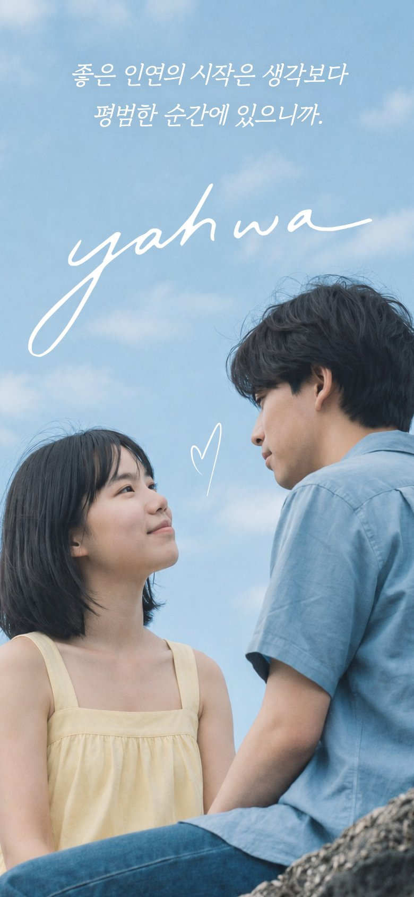
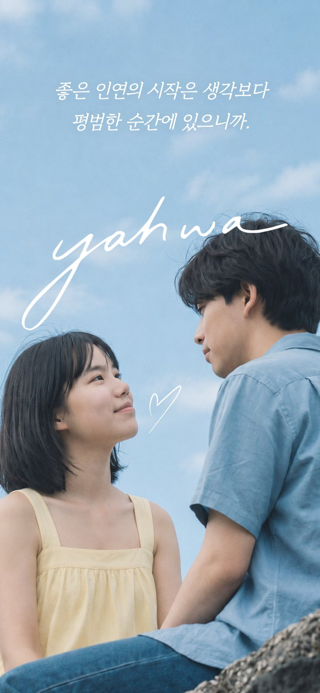
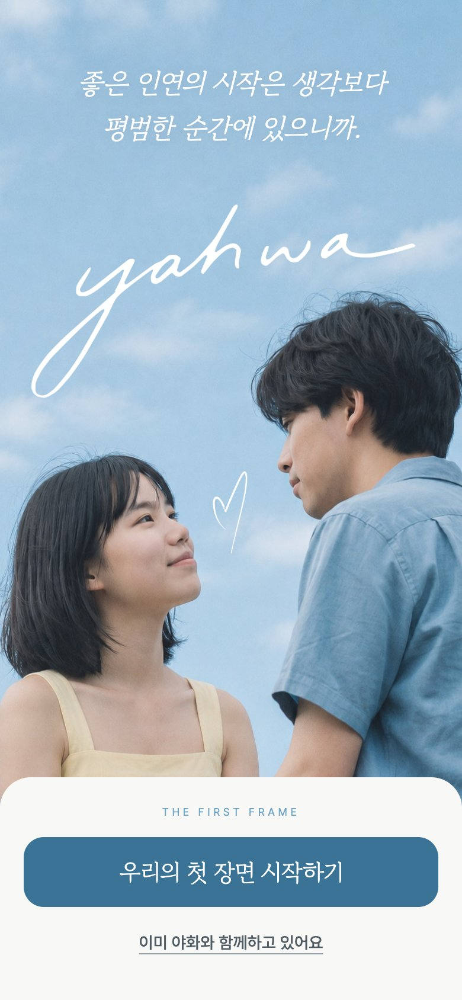
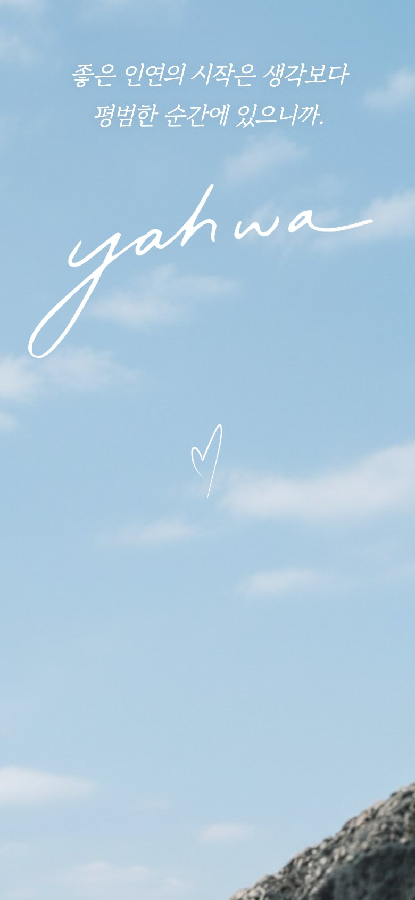

S1 웰컴 그대로: 같은 사진 · 같은 자리의 문구 "좋은 인연의 시작은…" · yahwa 로고 · 손그림 하트. 아래 버튼 영역이 없으니 사진이 화면 끝까지(두 사람 무릎께까지) 보여요. 스플래시 → 웰컴으로 넘어갈 때 사진 · 문구 · 로고는 제자리이고 아래에서 버튼 영역만 올라와 이어져 보여요.
S2 조금 아래로: 버튼 영역이 없는 만큼 문구 · 로고 · 하트를 40~60 내려 화면 가운데 쪽으로. 대신 로고가 남자 머리와 더 겹치고, 웰컴으로 넘어갈 때 문구가 살짝 움직여요.
시안
지금흰 바탕 + 작은 로고

S1웰컴과 같은 자리 · 사진 끝까지

S2문구 · 로고 조금 아래로

웰컴비교용 · 아래 버튼 영역
이어서 · 인물 없이 하늘 배경만
배경 사진: 웰컴 사진을 Higgsfield(Nano Banana)로 두 사람만 지운 것. 하늘 · 구름 결 · 필름 느낌 · 오른쪽 아래 바위는 그대로.
S3 하늘 + 하트: S1 배치 그대로에 사람만 빠진 사진. 문구 · 로고 · 손그림 하트는 같은 자리라, 웰컴으로 넘어가면 같은 하늘에 두 사람이 나타나는 장면이 돼요.
S4 하늘만: S3에서 하트도 빼고 문구 · 로고만. 가장 조용해요.

S3하늘 배경 + 문구 · 로고 · 하트S4하늘 배경 + 문구 · 로고배경 1시안에 쓴 사진배경 2같은 요청으로 한 장 더